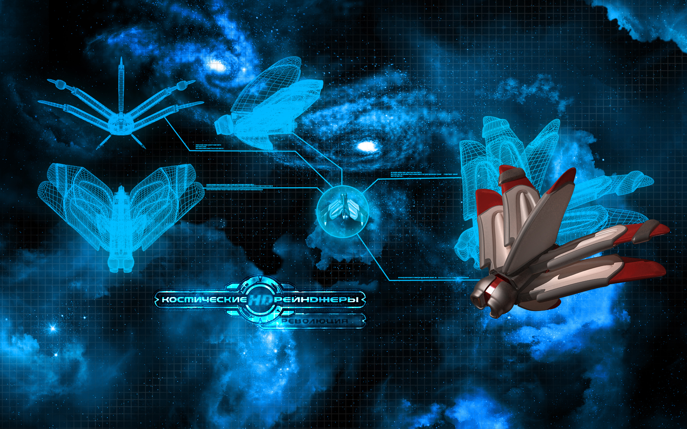
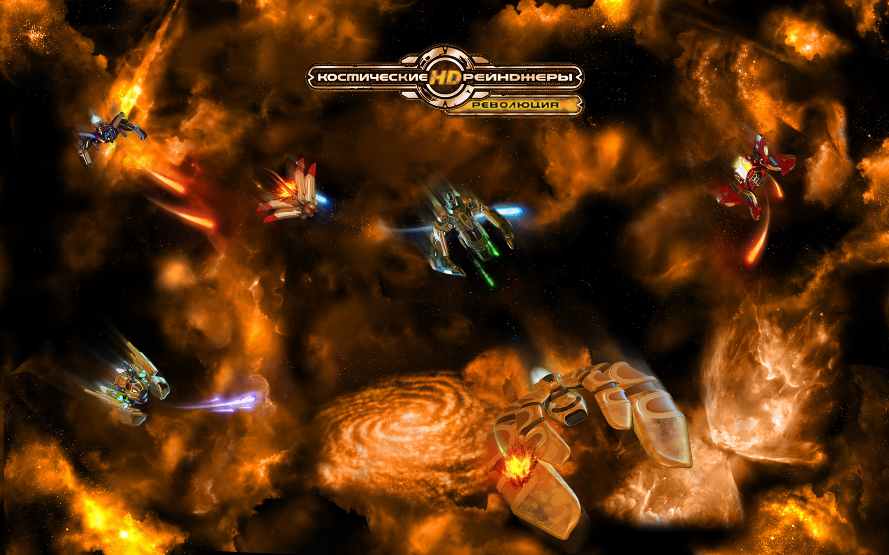

Люди - гуманоиды среднего роста, с тонким хрупким скелетом, питаются органической белковой пищей. Разнородность климатических режимов на большинстве заселенных планет (в особенности Солнечной системы) отражаются в сильных внешних различиях: цвете кожи, чертах лица и т.д.
Люди, прежде всего психологи, политики и дипломаты. Риторика, психологическая игра, политические технологии - главные сильные позиции людей. Люди и фэяне братья навек, а вот малокскую цивилизацию люди всегда недолюбливали и опасались. Отношение к пеленгам и гаальцам нормальное.
В плане технологического развития люди крепкие середнячки. Все главные завоевания человечества лежат в экономической сфере. Появился общий галактический рынок, где стало возможным торговать разрешенными в данном месте товарами (создать общий список разрешенных товаров до сих пор не удалось), и, конечно же, главная победа - введение общей денежной единицы - галактического кредита! К другим успехам относятся введение общей хронологической системы на основе человеческой и организация свободного перемещения граждан.
Обои
 Феяне
Фэяне - раса гуманоидов-гермафродитов с большими фасеточными глазами. Это малоподвижные, физически слабые существа, большая часть активности которых направлена на мыслительную деятельность. Фэянин может произвольно делить свое сознание и фасеточное зрение на участки, функционирующие самостоятельно, таким образом образовывая произвольное количество автономно и независимо действующих областей сознания, отдельно воспринимающих мир через свою часть фасеточного зрения.
Фэянскую расу отличает высочайший уровень естественных умственных способностей. Это философы, исследователи и новаторы, культивирующие собственную культуру и собственное оригинальное видение мироздания. Фэяне боготворят гаальцев и снисходительно относятся к своим меньшим братьям по разуму – людям. Малоков фэяне скорей воспринимают как животных, нежели как разумных существ. Пеленгских шпионов охочих до фэянских технологий, фэяне постоянно отлавливают и наказывают.
Основная роль и непосредственная ответственность фэян в Содружестве - исследовательские проекты и направления. Именно фэянские институты провели и завершили в 2882 г. фундаментальные исследования черных дыр, в результате которых были созданы технологии нуль-перехода и боевые прототипы современного прожектора вихря.